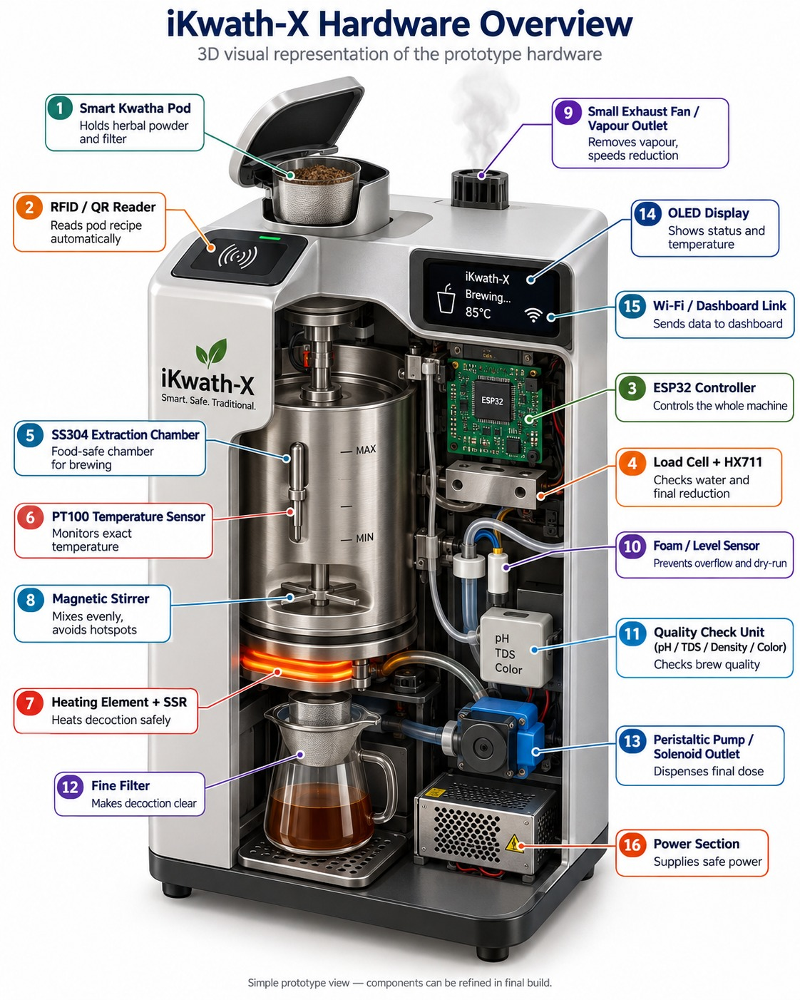
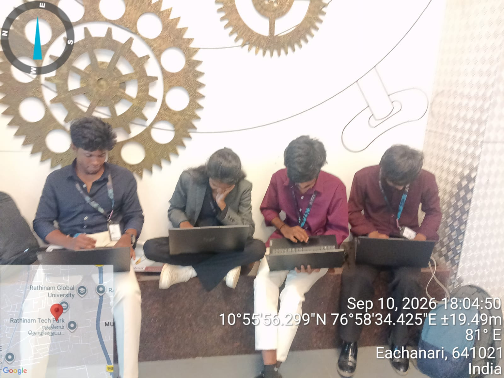

01
Freshness Window
Freshly prepared decoction has a short usage window, making on-demand preparation important.
SIH26048 • MEDTECH / BIOTECH / HEALTHTECH
iKwath-X is a smart pod-based Ayurvedic Kwatha maker designed to prepare a fresh, standardized decoction from coarse powder through controlled heating, mixing and mass-based reduction.

Fresh Kwatha preparation involves several process steps that need consistency, from ingredient handling to the final reduction endpoint.
Freshly prepared decoction has a short usage window, making on-demand preparation important.
Correct coarse powder, water proportion, soaking, heating and reduction must be controlled.
Final decoction strength depends on reaching the required reduction endpoint consistently.
Ingredient identity, plant part, proportion and process need to remain consistent.
iKwath-X combines smart pod identification, closed-loop temperature control, gentle mixing, mass-based reduction and automatic dispensing.
Each pod carries its ingredient and preparation profile.
Load-cell feedback identifies the actual reduction endpoint.
Process consistency is checked before the final dose is dispensed.
RFID / QR pod recognition
PID heating at 85–90°C
Gentle stirring / recirculation
Mass-based 1/4 endpoint
pH / TDS / Density check
Automatic filtered fresh dose
The system uses off-the-shelf embedded hardware with closed-loop process control.
Main controller for sensing and system control.
Temperature monitoring during brewing.
Mass measurement and reduction endpoint detection.
Smart pod identification and recipe selection.
Controlled heating of the brewing chamber.
Gentle mixing and recirculation.
Removable brewing chamber.
ESP32 firmware development.
Hardware control and automation logic.
Closed-loop temperature regulation.
Temperature and mass feedback processing.
Formulation-specific preparation parameters.
Pod ID, temperature history and endpoint data.
RFID / QR identifies the formulation.
Formulation-specific process profile is loaded.
Heating and mixing are controlled automatically.
Load-cell feedback detects the 1/4 endpoint.
Process quality parameters are checked.
Filtered fresh Kwatha is automatically dispensed.

The proposed system separates AC and DC sections and includes multiple protection mechanisms.
Temperature and mass feedback reduce manual process variation.
Automation reduces repeated weighing, monitoring and handling.
Digital profiles support formulation-specific recipe execution.
Pod ID, temperature history and endpoint data can be logged for review.
A team working towards a smart and controlled approach to fresh Kwatha preparation.


Team Member

Team Member

Team Member
 https://www.linkedin.com/in/mayuri-s-v-187104383/
https://www.linkedin.com/in/mayuri-s-v-187104383/
Team Member

Project Mentor

Project Mentor
Reference for Kwatha preparation principles and formulation-specific quantities.
Supports formulation-specific quality control and standardisation principles.
Supports physicochemical and chemical comparison approaches.